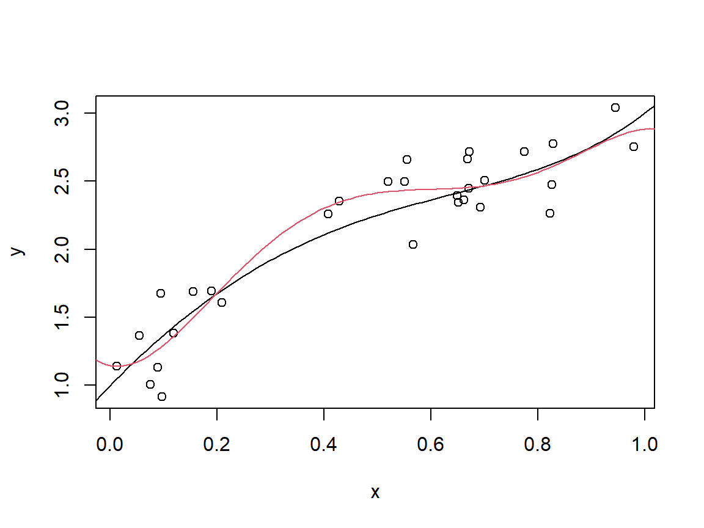
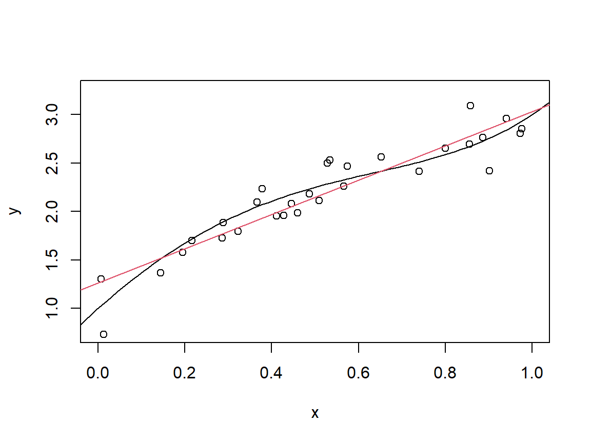
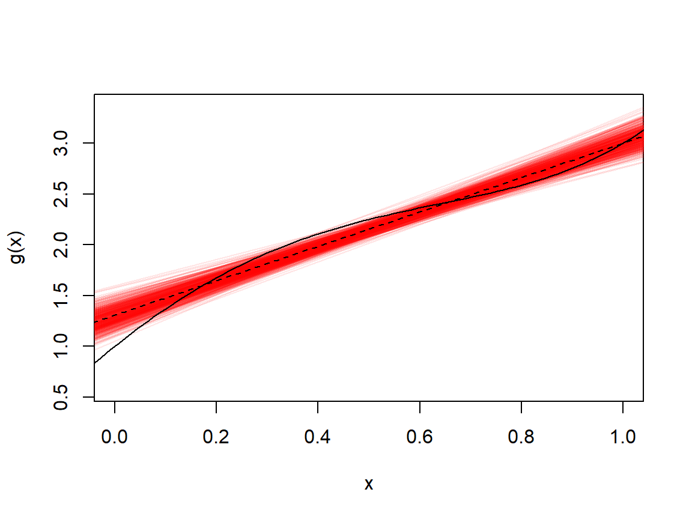
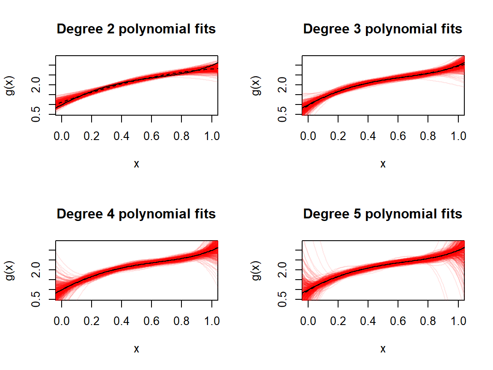

5 The Fundamentals of Predictive Modelling II
\[ \def\x{\mathbf{x}} \def\Rr{\mathbb{R}} \newcommand{\argmin}{\mathop{\rm argmin}} \newcommand{\argmax}{\mathop{\rm argmax}} \def\F{\mathcal{F}} \def\hbbeta{\hat{\boldsymbol{\beta}}} \def\bbeta{\boldsymbol{\beta}} \def\X{\mathbf{X}} \def\y{\mathbf{y}} \def\hg{\hat g} \]
In the previous chapter we looked mainly on model training, where we focus on estimating predictive models by minimising a loss function. In this chapter we look mainly at evaluating models so that we can use these evaluations in order to select which (from multiple possible models) to take forward for actually predicting on cases which are not in our observations.
5.1 A Quick Recap
Recall the regression setting, where a numeric response variable, \(Y\), is related to covariates \(X\) via the equation \[ Y = g^*(X) + \epsilon \]
- We can think of \(g^*(X)\) as the “signal” (what is predictable about \(Y\) from \(X\)) and \(\epsilon\) as the “noise” (what is not predictable)
We are considering fitting a model by minimising training error: \[ \hat g = \argmin_{g \in \F} \frac{1}{n}\sum_{i=1}^n (y_i - g(\x_i))^2 \] We finished by looking at polynomials of a single covariate: \(\hat g(x) = \hat \beta_0 + \sum_{j=1}^d \hat \beta_j x^j\), where \(d\) is the degree of the polynomial
5.2 Overfitting
We saw in the last section that as we increased the degree of the polynomial, we were able to fit better and better to the training data (getting smaller and smaller training error)
This is because the higher degree models have more flexibility:
Let’s use the notation \(\hat g_d\) to be the fitted degree \(d\) polynomial model, so that \[\begin{align*} \hat g_d(x) &= \hat \beta_0 + \sum_{j=1}^d \hat \beta_j x^j,\\ \mbox{where } \hbbeta &= \argmin_{\bbeta \in \Rr^{d+1}} \frac{1}{n}\sum_{i=1}^n \left(y_i - \beta_0 - \sum_{j=1}^d \beta_j x_i^j\right)^2 \end{align*}\]
But for any \(d' > d\) we could also write \(\hat g_d(x) = \hat \beta_0 + \sum_{j=1}^d \hat \beta_j x^j + \sum_{j=d+1}^{d'} 0 x^j\)
In other words, \(\hat g_d\) is also a degree \(d'\) polynomial, but we are only allowed to choose the value zero for all of the coefficients \(\hat \beta_{d+1}, ..., \hat \beta_{d'}\)
On the other hand the fitted degree \(d'\) model, \(\hat g_{d'}\) is “allowed” to have zero OR non-zero values for these coefficients, and would choose whichever gave the lower training error
These extra options available to \(\hat g_{d'}\) means it is a strictly more flexible model than \(\hat g_d\), and so we should expect it to have lower training error (it is impossible for it to have higher training error)
If we took this idea to the extreme, we would be able to fit the training data perfectly (i.e. achieve zero training error) if we went as far as using a degree \(n-1\) polynomial
The fact that we can always fit the training data perfectly, provided we
have a flexible enough model, should give us pause when choosing to fit
models only based on training error. Indeed we saw previously, when
using the cars data set, that although our training error kept
decreasing as we increased the degree of the polynomial, when plotting
the functions which had been fit they did not seem like realistic
representations of the actual relationship between speed and stopping
distance.
Another way of viewing this is that a model which fits the data perfectly must essentially have “memorised” every aspect of them, even the random residual terms which are, by definition, unpredictable
- A model which fits too well to the data (incorporating all or most of the noise) is said to overfit the data
When we try to make predictions from such a model it will ultimately be reproducing the “noise” from the training data.
Example:
Let’s return to the example we saw right at the beginning of this section. We have the setup where
\[\begin{align*} Y = 1 + 4X - 3X^2 - X^3 + 2X^4 + \epsilon, \end{align*}\]
where \(X\) is uniformly distributed on \((0,1)\) and \(\epsilon \sim N(0, 1/25)\). In the following code chunk we simulate a set of \(n = 30\) realisations of \(X\) and \(Y\).
### First let's set up what is fixed
#sample size
n <- 30
# residual standard deviation
sigma_resid <- 1/5
# true regression function
g <- function(x) 1 + 4*x - 3*x^2 - x^3 + 2*x^4
### Now we can sample our realisations of X and Y
x <- runif(n, min = 0, max = 1)
y <- g(x) + rnorm(n, sd = sigma_resid)
### We then fit a high degree polynomial, say with degree six
model <- lm(y~poly(x, 6), data = data.frame(x, y))
### For plotting reasons we can obtain predictions over a grid of values of x
x_grid <- data.frame(x = seq(from = -.1, to = 1.1, by = 0.01))
predicted <- predict(model, x_grid)
### Finally let's visualise the sample points, the true function and
### the fitted function
plot(x, y)
curve(g, from = -.1, to = 1.1, add = TRUE)
lines(x_grid$x, predicted, col = 2)
Try re-running the above code multiple times. You will see how much the fitted function varies from sample to sample. This is because the model is trying to model too much of the data and is capturing a lot of what makes the samples different (the residual “noise” terms) and not only what makes them similar (the actual functional “signal” component).
Now try changing the degree of the polynomial and run the code multiple times. What do you observe?
Although we never know the true function in practice, for a comparison like we have here, using simulations like this in order to see how well different types of models tend to perform can be very instructive.
5.3 Prediction Error and Generalisation
What we actually want is not a model which simply reproduces the training data, but one which generalises well, meaning that it predicts well/accurately on new cases (i.e. those not in our sample). We already know the values of \(Y\) in our sample, and we want our model to pick up on the trend in the relationships with the covariates so that it will be able to reproduce that trend in its predictions, but without unnecessary incorporation of the noise.
The prediction error (or generalisation error) of a model, \(\hg\), is its expected error/loss over the entire distribution of potential pairs of \(Y\) and \(X\):
\[\begin{align*} PredictionError(\hat g) &= E_{X,Y}\left[L(Y, \hg(X))\right]. \end{align*}\]
In the standard regression setting we have \(L(y, \hat y) = (y-\hat y)^2\) and so
\[\begin{align*} PredictionError(\hat g) &= E_{X,Y}\left[\left(Y - \hg(X)\right)^2\right]. \end{align*}\]
Typically the training error underestimates the prediction error, since the model has been fit/chosen/optimised specifically to minimise the error on the training data, and not the entire distribution of \(Y\) and \(X\)
- Note that this is the case even in the absence of overfitting, but overfitting will tend to lead to a larger difference between prediction error and training error
Moreover we cannot directly tell whether a model has overfit or not, but models with more flexibility have a greater risk of overfitting.
But there is another side of the “coin”, and if a model is not given enough flexibility, it may underfit, meaning it may not pick up much on the noise in the data but may be so inflexible that it also misses a lot of what is actually the signal.
Perhaps the most difficult problem in predictive modelling is identifying the right amount of flexibility: so that the model can capture the nuances of the regression function \(g^*\), but is not so flexible that it captures an unnecessarily large amount of the noise as well.
Choosing a model, or the right amount of flexibility to give a model when training, is known as model selection.
If we somehow had direct access to the prediction error of a model, or of a collection of models given different amounts of flexibility, then selecting the one with the lowest prediction error is an obvious approach
- Or, if model interpretability is also a key aspect of the analysis, then we may choose a model based on some trade-off of accuracy and interpretability.
5.3.1 Expected Prediction Error
It turns out that obtaining a reliable enough estimate for prediction error of a model, \(\hat g\), for the purpose of model selection, is not so easy.
We typically instead rely on the expected prediction error of \(\hat g\) as an estimator:
\[\begin{align*} E\left[PredictionError(\hat g)\right] = E_{\hat g, X, Y}\left[L(Y, \hat g(X))\right]. \end{align*}\]
How this differs from prediction error is:
- Instead of the prediction error of the model I obtained from my specific training data, it quantifies the average prediction error of the models I could have obtained by using the same fitting/training/estimation procedure (the same estimator) on infinitely many training data sets from the same population
5.3.2 The Bias-Variance Tradeoff
Expected prediction error has (at least) two advantages over prediction error: We can obtain more stable estimates for it, and we can use the statistical properties of \(\hat g\) (as an estimator) to better understand it.
In particular, in the regression setting, and using as before the squared error as the loss function, it can be shown that
\[\begin{align} e^2(\hat g) :=& E\left[PredictionError(\hat g)\right]\\ =& \sigma_{\epsilon}^2 + \int_{\Rr^p} f_X(\x) Bias(\hat g(\x))^2 d\x + \int_{\Rr^p}f_X(\x) Var(\hat g(\x))d\x,\label{eq:biasvariance} \end{align}\]
where \(\sigma^2_\epsilon\) is the variance of the residual \(\epsilon\).
- \(\sigma_\epsilon^2\) is called the irreducible error since there is
no model which has prediction error below this quantity.
- \(\sigma_\epsilon^2\) is the prediction error of \(g^*\)
- The second term corresponds with the average squared bias of \(\hg\), across all possible values of \(X\). Recall that the bias of \(\hg\) at a particular \(\x\) is \(E[\hg(\x)] − g^*(\x)\), i.e. how “far off” \(\hg\) is from \(g^*\), when evaluated at \(\x\), on average over infinitely many training sets
- The final term is the average variance of \(\hg\), again across all possible values of \(X\).
We will refer to these latter two terms simply as the model bias and model variance, and they are statistical properties of the estimator \(\hg\). The sum of the (squared) bias and the variance is also sometimes referred to as the risk, and quantifies the excess error of the model over the best possible model \(g^*\)
It is worth noting that although this exact decomposition holds only for the squared error loss function, and where \(Y = g^*(X) + \epsilon\), the intuition we can gain from it applies to other contexts as well.
Broadly speaking for models to have low bias, they require more flexibility in order to be able to fit to a potentially complex regression function, \(g^*\)
- When \(g^*\) is relatively simple, we may not need much flexibility, but typically adding flexibility does not increase bias, but could decrease it
But as we have seen, more flexibility allows models to fit closer to the data, thus incorporating more of the “noise”. This makes them more variable across different samples, hence increasing their variance.
This balancing of flexibility against susceptibility to noise is referred to as the Bias-Variance tradeoff and is one of the fundamental principles in statistical learning.
5.3.2.1 The Bias and Variance of a Regression Model
Let’s return to a simple example we saw right at the beginning of this section. We have the setup where
\[\begin{align*} Y = 1 + 4X - 3X^2 - X^3 + 2X^4 + \epsilon, \end{align*}\]
where \(X\) is uniformly distributed on \((0,1)\) and \(\epsilon \sim N(0, 1/25)\).
### First we can set up what is constant:
# The regression function, a degree 4 polynomial
g <- function(x) 1 + 4*x - 3*x^2 - x^3 + 2*x^4
# The standard deviation of the residuals (later we can try varying this to see what effect it has on estimation)
sigma_resid <- 1/5
# The sample size, which has a very substantial effect on the statistical properties of the regression estimator
n <- 30
### We can now simulate some data with this set-up
x <- runif(n, min = 0, max = 1)
y <- g(x) + rnorm(n, sd = sigma_resid)
### Now let's plot the data, and add the true regression function
plot(x, y, ylim = c(0.75, 3.25), xlim = c(0, 1))
curve(g, add = TRUE, from = -.1, to = 1.1)
### Now let's add the simple linear regression fit from the data
model <- lm(y~x, data = data.frame(x, y))
abline(model$coefficients, col = 2)
Run the above code multiple times. You should not be surprised to see a different fitted model each time, since the sample changed. Although no single fitted model can show us what the bias and variance are, repeated experiments can give us some understanding of these. The simple linear model is, well “simple”, and so it doesn’t have very high variance, and you probably noticed that even with a small-ish sample size (30) the models fit on different samples were not that different from one another. You will probably also have been able to see regions where the models tend to over/under estimate the true function, indicating potential bias.
The following chunk of code will run this experiment 500 times, and add all of the lines fit to the different data sets generated.
### First we set the number of repeats of the experiment
repeats <- 500
### We will be adding the lines from multiple fitted regression models
### and so first need to set up a plot on which to add these
curve(g, from = -.1, to = 1.1, xlim = c(0, 1))
### Now we repeat the experiment. We will also store the predictions over
### a grid of values for x so that we can calculate estimate the bias and
### variance
x_grid <- data.frame(x = seq(-.1, 1.1, by = .01))
predicted <- matrix(, repeats, length(x_grid$x))
for(rep in 1:repeats){
# simulate data
x <- runif(n, min = 0, max = 1)
y <- g(x) + rnorm(n, sd = sigma_resid)
# fit model
model <- lm(y~x, data = data.frame(x, y))
# store predictions
predicted[rep,] <- predict(model, x_grid)
# add line to graph
abline(model$coefficients, col = adjustcolor("red", alpha.f = .1))
}
### All of the lines will have obscured the original plot. We can add that back
### and also add the averaged model predictions
curve(g, from = -.1, to = 1.1, add = TRUE)
lines(x_grid$x, colMeans(predicted), lty = 2)
Now we are able to see the bias more clearly, where the dashed line is the average fitted value for each value of \(x\) over all 500 fitted models. We can also see that that variance increases as we move away from the middle of the range of \(x\) values.
We know that as we increase the flexibility (degree of the polynomial, where a linear/affine function is just a degree one polynomial) we should see the bias decreasing and the variance increasing. Let’s run the same experiment but for degrees two up to five for comparison.
par(mfrow = c(2, 2))
### We can put the above code into a loop over the degree
### of the polynomial. We've seen the linear (degree one)
### polynomial so let's look at degrees 2 - 5
for(d in 2:5){
curve(g, from = -.1, to = 1.1, xlim = c(0, 1),
main = paste0("Degree ", d, " polynomial fits"))
x_grid <- data.frame(x = seq(-.1, 1.1, by = .01))
predicted <- matrix(, repeats, length(x_grid$x))
for(rep in 1:repeats){
# simulate data
x <- runif(n, min = 0, max = 1)
y <- g(x) + rnorm(n, sd = sigma_resid)
# fit model
model <- lm(y~poly(x, d), data = data.frame(x, y))
# store predictions
predicted[rep,] <- predict(model, x_grid)
lines(x_grid$x, predicted[rep,],
col = adjustcolor("red", alpha.f = .1))
}
curve(g, from = -.1, to = 1.1, add = TRUE)
lines(x_grid$x, colMeans(predicted), lty = 2)
}
We can see that the quadratic (degree two) model still has very obvious bias, in that the average fit shown with the dashed line over/underestimates the true function at different values of \(x\). In the extreme left and right we can also see slight bias in the degree three polynomial model.
Although we can see very slight deviations in the average fit from the true function for degrees four and five, these are down to the fact that we have averaged 500 fitted models and not infinitely many. In fact if the true model is a degree \(d\) polynomial (where here we know \(d = 4\)) then the bias of all models with degree at least \(d\) is theoretically zero.
The “cost” of choosing a higher degree polynomial is, however, that the variance increases, and the higher variation in the fitted models with degrees 4 and 5 should be very apparent in these experiments.
5.4 Estimating (Expected) Prediction Error
It is important to note that the experiments we conducted in the previous subsection could only be performed because the true distribution of \(Y\) and \(X\) was known
We knew the true regression function, \(g^*\)
We knew the distribution of the residuals, and so could generate lots of samples and fit lots of regression models
In reality we do not know \(g^*\) and only get one sample from which we have to do “everything”
We need to find our estimates for \(g^*\) AND try to estimate what their (expected) prediction errors are (so that we can choose the one seen to be the “best”)
By definition (expected) prediction error is based on the loss attained by our estimate(s)/estimator(s) for points separate from the training data
5.4.1 Validation for Estimating (Expected) Prediction Error
We saw in our introduction to statistics that the bootstrap was a way of “overcoming” the fact that we have only a single sample from which to perform estimation and potentially estimate our uncertainty. A similar idea can be applied in the context of predictive modelling. Although it is possible to estimate the variance of a model directly using the bootstrap, estimating bias is typically not possible without making some assumptions.
However, we don’t necessarily need to estimate the bias and variance of a model if we can more directly estimate its expected prediction error, bypassing the need for estimating these two components of the risk altogether.
The most principled approach for estimating the prediction error of a model is by actually testing it on cases (pairs of values for \(X\) and \(Y\)) which were not given to it for training
- Part of the sample which is set aside from training, to assess the prediction capabilities of different trained models, and which is used for model selection is called a validation set.
For clarity, let’s adopt the following notation. Letting \(\hg\) be an estimator for \(g^*\), for a specific training set \(T\) we will write \(\hg^T\) to be the resulting model fit after training on \(T\). Then, if we split our entire sample into training \(T = \{(y_1^T, \x_1^T), ..., (y_{n_T}^T, \x_{n_T}^T)\}\) and validation \(V = \{(y_1^V, \x_1^V), ..., (y_{n_V}^V, \x_{n_V}^V)\}\) sets then the validation error of \(\hg^T\) is \[ Val(\hg^T) := \frac{1}{n_V}\sum_{i=1}^{n_V}L\left(y_i^V, \hg^T(\x_i^V)\right) \]
Hopefully it is clear that the training and validation sets must not overlap, and any overlap would be a direct form of data leakage, something which was mentioned in relation to exploratory data analysis.
A few other points may also have come to mind. We are aware that, all other things being equal, models trained on larger samples tend to give more accurate predictions.
- \(n\) seldom affects bias substantially and increasing \(n\) will decrease variance
What this means is that the model trained on the entire sample \(\hg^{T\cup V}\) is likely to be a better model than \(\hg^T\). Although \(Val(\hg^T)\) is an unbiased estimate for \(PredictionError(\hg^T)\) it will typically overestimate \(PredictionError(\hg^{T\cup V})\). When it comes to actually producing a model for deployment, we would like to be able to use all of (or as much of) the data for training this final model as possible, to get the best results once it is deployed.
A small validation set would mean that \(Val(\hg^T)\) is only slightly biased as an estimate for \(PredictionError(\hg^{T\cup V})\), and so this particular issue may not be too problematic
But a small validation set would mean that the variance of \(Val(\hg^T)\) is large, and we may not want to base such an important decision as model selection on an unreliable estimate for performance.
5.4.1.1 Cross Validation
To achieve both relatively low variance and relatively low bias (overestimation) when estimating prediction error, we could repeatedly split the data into training and validation sets, with each validation set being relatively small, and then average the resulting validation errors
Since each validation set is small, we should not have too much bias
The variance of the averaged validation errors is lower than that of a single validation error
The issue with this is that the averaged validation error is not an estimate for the prediction error of any single model, but is rather is an estimate for the expected prediction error of \(\hg\) (as an estimator) fit on a training set the size of \(T\). This is not necessarily a problem. Ultimately we can obtain better estimates for the expected prediction error of \(\hg\) than of the actual prediction error of our particular realisation of \(\hg\).
Cross validation, arguably the most universally applied method for estimating model performance for model selection in predictive modelling, is a very systematic approach to this repeated validation idea: simply put, every point in the sample is used as a validation point (i.e. within one of the validation sets) exactly once.
To be precise, cross validation works as follows:
Split the sample into \(K\) subsets (called validation “folds”), of roughly equal size.
For \(k = 1, ..., K\) let the \(k\)-th fold be \(V_k = \{(y_1^{V_k}, \x_1^{V_k}), ..., (y_{n_k}^{V_k}, \x_{n_k}^{V_k})\}\) and let \(T_k\) be all the points except those in fold \(k\).
For each \(k = 1, ..., K\):
fit the model to all except the \(k\)-th fold to obtain \(\hat g^{T_k}\)
estimate the prediction error of \(\hat g^{T_k}\) using the validation error from fold \(k\), \[ Val(\hat g^{T_k}) = \frac{1}{n_k}\sum_{i=1}^{n_k}L(y_i^{V_k}, \hat g^{T_k}(\x_i^{V_k})) \]
Average these to obtain the cross-validation based estimate for expected prediction error of \(\hat g\) \[ \widehat{E[PredictionError(\hat g)]}_{CV} = \frac{1}{K}\sum_{k=1}^K Val(\hat g^{T_k}) \]
Considerations and Limitations
Cross validation (CV) is popular for its universality and simplicity, but has some limitations:
It is an estimate of expected prediction error, and not prediction error
It is a biased estimate of the expected prediction error of \(\hg\) fit using the entire training sample, since each “training set” used in CV has size (approximately) \(n\frac{K-1}{K} < n\)
It depends on the specific splitting of the sample into folds; if the folds had been split differently the output would be different
- There are two sources of randomness: the randomness in the drawing of our sample from the population (the “regular” randomness in statistics) and also the randomness in how we split this sample into folds
The Effect of Varying \(K\)
As we can see above, the size of each training set used in cross validation is \(n\frac{K-1}{K}\), which is increasing in \(K\). As a result, the larger the number of folds the less is the bias in the cross validation based estimate of expected prediction error of the model trained using the entire sample (size \(n\)). The interaction of \(K\) with the variance has some subtlety to it:
For large \(K\) each validation set is small, and so each of the \(K\) estimates of prediction error has high variance. However, the final estimate of prediction error is an average of all \(K\), and typically when we average a larger number of random variables there is a greater reduction in variance.
The main factor which leads the variance of the cross validation estimate to increase with \(K\) is the fact that the training sets have large overlap and hence the prediction errors of each of the resulting models are highly correlated. When averaging positively correlated random variables there is a lesser reduction in variance compared with averaging independent (or uncorrelated) ones.
There is also the factor of computation, since \(K\) separate models need to be trained to obtain an estimate for the expected prediction error. Although there are some special cases where specifically the \(n\)-fold (or “Leave-One-Out”) cross validation estimate can be obtained efficiently.
It is also worth considering the relationship between \(n\) and \(K\). Although it will depend on the particulars of the model being used, as a general rule of thumb if \(n\) is smaller it may be preferable to choose a larger value for \(K\). This is both because when \(n\) is smaller, decreasing it by a fixed proportion will often affect the expected prediction error a greater amount than when \(n\) is larger, and also because fitting each model is computationally less demanding and so more total models can be fit in a relatively small amount of time.
All things considered, for most problems it has become common to choose \(K\) equal to either five or ten, and these give a reasonable tradeoff of bias and variance, as well as not being problematic computationally except when fitting each model is already computationally burdensome.
5.4.1.2 Cross Validation in R
One of the benefits of Cross Validation is its simplicity. Nonetheless,
whenever existing implementations (which are popular, and so any bugs
will almost surely have been identified) are available it is beneficial
to leverage this convenience. The caret package (Classification And
REgresstion Training) is an extremely popular and versatile general
purpose package, which includes links to a very large number of
implementations of predictive models. For a list of all the models
included in caret see the package documentation at
https://topepo.github.io/caret/available-models.html.
For those models included in the package, performing cross validation
for multiple different “versions” of the models (e.g. the “versions” of
a simple polynomial regression model could be associated with different
polynomial degrees) can be done with a single call to the function
train. However as simple polynomial regression is not one of the
models included we have to run cross validation separately for each
degree (or, as we will cover a little later on, we can create our own
“method” for caret to operate on).
- When we think of exploring different “versions” of a model, like different degrees of a polynomial regression model, we often refer to this as model tuning, and the variables (or parameters) which determine the different “versions” are called tuning parameters or sometimes hyperparameters. Model tuning is also a model selection task, but instead of choosing from among multiple model types we are choosing from different “versions” of the same model type.
Now, ensuring you have the package installed, run the following code
chunk. It will run cross validation for estimating the expected prediction error of
simple polynomial models on the cars data set we explored previously.
### First we load the package
library(caret)
### the function train() is the main workhorse of the package
### it takes formula and data arguments, just as we saw with the
### lm() function. Also, since it offers broad functionality we
### to specify what method (type of model) we want to be using.
### Finally we need to provide an argument called trControl which
### tells train() what exactly we want to do, i.e., just fit one
### model on all the data, or do CV (or something else like the
### bootstrap) for model selection. The trControl object is
### produced by the function trainControl. For details on this
### have a look at help(trainControl), remembering to ensure the
### caret package is loaded.
### let's start by setting up the trControl object. We want to do
### cross validation, and let's choose 10 folds
trControl <- trainControl(method = "cv", number = 10)
### For the models linked directly by caret we can perform CV
### across multiple "versions" of the model using a single call.
### However simple polynomial regression is not linked directly
### and so we cannot directly use a single call to run CV for
### all polynomial degrees, and will have to do these in a loop
CV_results <- list()
for(d in 1:5){
set.seed(12345)
form <- as.formula(paste0("dist~poly(speed,", d, ")"))
CV_results[[d]] <- train(form, method = "lm",
data = cars, trControl = trControl)
}Setting the seed before each call to the function train was important
here so that the same CV folds were used each time. In the output of
train is a list with a field results which contains the performance
statistics from the cross validation. The result RMSE (Root Mean
Squared Error) is the square root of the estimate of expected prediction
error based on the squared error loss function.
## [1] 15.11234If we wish to choose the model which gave the lowest expected prediction error, we can inspect them all
## [1] 15.11234 14.91259 14.93013 14.83372 15.93608We can see that the degree four polynomial gave the smallest estimated expected prediction error. However, the differences when compared with the lower degree models are relatively small. It is often prudent to opt for a simpler model if the estimate of expected prediction error is similar to that which attained the lowest estimate. This is especially true if the sample is relatively small, and hence the estimate for expected prediction error may be highly variable. Try changing the seed and re-running the above code.
A Better Way: Create Your Own Models For Use In caret
Instead of looping over the different values of d, the degree of the
polynomial, we can have caret do all that work for us. It will also
output the results in a far more digestible way than if we just populate
a list of outputs as we did above. It will also go ahead and do the
model selection for us. The caret package allows us to link to our own
models, so that we can use the train function to apply all its
wonderful methodology. Instead of setting the method argument to the
name of a method/model which caret is already linked to, we can
provide a list containing all the objects it needs in order to offer the
same functionality. The following video gives a brief demo for how we
could implement simple polynomial regression, and select of the “tuning
parameter” d (the degree of the polynomial) automatically. In
addition, the script which I go through in the video is available at <“https://modules.lancaster.ac.uk/mod/folder/view.php?id=2771508”>.
For those who are interested, some far more advanced examples can be
seen in the caret documentation at
https://topepo.github.io/caret/using-your-own-model-in-train.html.
5.4.2 Covariance Based Estimates of “In-Sample Error”
An alternative to cross validation for estimating the expected prediction error of a model is that of estimating what is known as in-sample error, and expected in-sample error. The in-sample error of a model is very closely related to its prediction error, except that rather than looking at all possible pairs of \(X\) and \(Y\) in the population it uses the same \(X\) values as in the sample but pairs these with other possible values of \(Y\).
Specifically, suppose that we have a sample as always, equal to \((y_1, \x_1), ..., (y_n, \x_n)\). Then the in-sample error of a fitted model \(\hg\) is the average error it would achieve for the same values of \(\x_i; i = 1, ..., n\) but over new potential values of response, say \(\tilde Y_i; i =1, ..., n\) \[ E_{\tilde Y_1, ..., \tilde Y_n}\left[\frac{1}{n}\sum_{i=1}^n L(\tilde Y_i, \hg(\x_i)) \right]. \]
- Recall that in the predictive modelling context we are interested in the conditional distribution(s) of \(Y|X\), and in the above the \(\tilde Y_i\)’s are paired with the observations of \(X\) in the sample, i.e. \(\tilde Y_i\) is from the conditional distribution of \(Y|X = \x_i\).
As it is with prediction error, however, estimating in-sample error is not straightforward and we need to rely on estimates for expected in-sample error. This is just the expected value of in-sample error over potential training sets (and hence different fitted models).
It turns out that for the squared error loss function we can obtain an unbiased estimate for expected in-sample error from the quantity \[ \frac{1}{n}\sum_{i=1}^n L(y_i, \hg(\x_i)) + \frac{2}{n}\sum_{i=1}^n Cov(Y_i, \hg(\x_i)). \]
The first term above is just the training error. The second term above may be seen as a “penalty” to avoid selecting models likely to overfit. Models with too much flexibility will fit very closely to the sample, meaning that the fitted values would “follow” the values of the response if we instead had a different set of realisations (a different sample). This leads to a high covariance between each \(Y_i\) and its corresponding fitted value, \(\hg(\x_i)\). The more flexibility, the more able the model will be able to follow the variations in the data, leading to higher covariance between the actual responses and the fitted values from the model.
This doesn’t yet, however, tell us about how to compute or estimate these covariances. It turns out, however, that for some models we can obtain analytical expressions for the covariance between the response and fitted values. For example in a simplified setting (like the linear and quadratic models we have seen) the quantity \(\sum_{i=1}^n Cov(Y_i \hat Y_i)\) is equal to \(\sigma^2_{\epsilon}\) multiplied by the number of parameters in the model (the model degrees of freedom). As long as we can obtain a reasonable estimate for \(\sigma^2_{\epsilon}\) we can use this to obtain estimates of the expected in-sample error and use this as an alternative to something like cross validation to select/tune a model. As a rule-of-thumb estimating \(\sigma^2_{\epsilon}\) with the quantity \(\frac{1}{n - df(\hg^*)}\sum_{i=1}^n(y_i - \hg^*(\x_i))^2\), where \(\hg^*\) is the most (or one of the most) flexible models which has been fit and \(df(\hg^*)\) is its degrees of freedom.
Let’s apply this to the cars data set to see how it compares with cross validation
### Let's create a vector to store the training errors of
### the polynomial models for d = 1, 2, ..., 5
tr_err <- numeric(5)
### Now we can loop of the the degree of the polynomial
### as before
for(d in 1:5){
form <- as.formula(paste0("dist~poly(speed,", d, ")"))
mod <- lm(form, data = cars)
tr_err[d] <- mean((mod$fitted.values - cars$dist)^2)
}
### Now we can use the training error from the most flexible
### to estimate the residual variance
n <- nrow(cars)
sig2_hat <- tr_err[5]/(n - 6)*n
# Can you see why this is the appropriate estimate?
### Now let's estimate the expected in-sample error
### for each model
eise <- tr_err + 2*sig2_hat*(2:6)/n
eise## [1] 245.7308 244.4849 250.0081 252.6074 261.2458### When we did cross validation the caret package
### returned the square root of the estimated expected
### prediction error
unlist(lapply(CV_results, function(l) l$results$RMSE))^2## [1] 228.3829 222.3852 222.9089 220.0393 253.9585We can see that the estimates for expected in-sample error and the cross validation based estimates of expected prediction error are quite similar.
5.4.3 Test Sets
Before we continue it is important to touch on an important but subtle point. Using cross validation in order to select a model, based on its estimated expected prediction error, is very well founded. However, if we need both to select a model and to estimate its prediction or expected prediction error we face a little bit of a problem.
The reason that training error underestimates prediction error is because the function is chosen based on how well it predicts the training set (its training error) and not based on how well it predicts the entire distribution. Now let’s think about the validation error of the selected model in a similar light. We took a set of models, i.e. those models trained on the training split, and chose the one which had the lowest validation error. But this can be seen as another example of training. Instead of selecting from a class of functions \(\F\) based on the error on the training split (maybe with some penalisation) we selected from a much smaller set of models (the models trained on the training split) and just replaced the error on the training split with that on the validation split. But the same source of bias exists; we chose a model because it fit well on a sample of observations (now the validation split) and not necessarily on the whole population.
Unfortunately cross validation (as opposed to a single validation split) has the same source of bias, but just to a slightly lesser extent.
Now, this does not mean that using validation or cross validation to perform model selection is a bad idea. It only means that we cannot use the validation or cross validation based estimate of the (expected) prediction error as a true reflection of the prediction error of the selected model.
If we need perform training AND model selection AND have a reliable estimate of the prediction performance of the selected model we need to first, before any training and validation, separate some of the data as a test set which cannot be touched until we have done all of our training, validation, etc., and is only used as a final step to estimate the prediction error of our final selected model.
When both a final model and an estimate for its prediction error is needed then the typical workflow is:
Split the entire sample in a “training + selection” set and a test set.
Use the “training + selection” set in order to both select and train the final model(s) we want for deployment
- This could be be using cross validation, a single validation split or the expected in sample error based approach above
Estimate the prediction error of the selected and trained model(s) by calculating its/their error on the test set.
- It is important that the test set is kept completely separate from the “training + selection” set from the very beginning to avoid data leakage. Data leakage is when extra information which would not be available in practice is used in making modelling decisions. What we mean by “in practice” when we actually take the model(s) we have selected and trained and deploy them for use on new cases. Since the training/validation/testing splitting of the data is ultimately to try and represent the fact that when we actually deploy a model for use on data outside our sample it needs to be fully “ready to go” long before we see any of those “true test cases”. Perhaps more importantly, we typically will never know the values of the response variable for the cases on which we need the model to actually make predictions after deployment. This means that any information which relates even indirectly to the response variables in the test set, which is used for any part of the modelling/fitting/selecting tasks is a violation of this representation. Similarly, any information about the response variables in a validation set which is used in training will introduce additional bias to the validation error.
5.5 Summary
Overfitting is the term used to describe how overly flexible models may fit the data too well, modelling not only the trend in the relationships between \(X\) and \(Y\) (the “signal”), but also the unpredictable “noise” component \(\epsilon\)
Models which have high flexibility have high variance, and typically low bias. The variance and bias combine to define the risk
Although we cannot know necessarily when a model is overfitting, we can select an appropriate model (i.e. one which will likely generalise well) by estimating the expected prediction error of a number of models and choose the lowest
- If we care also about interpretability then we may wish to balance accuracy and interpretability
Cross-Validation is a principled and universal approach for estimating expected prediction error.
The
caretpackage provides a unified framework for training and “tuning” models, either by existing links to a very large number of packages and implementations or with the use of our own model implementations.If we need to have an estimate for the prediction error of our final selected model(s) then we need to first set aside a test set, which we don’t look at at all until after all modelling, training and selecting has been done. Once the final selected and fitted model(s) are ready for deployment then we can use the test set to estimate prediction error.
5.6 Exercises
Refer to the experiments in Chapter 5.3.2.1.
Modify these experiments to estimate the quantities \(E_X[Bias(\hg(X))^2]\) and \(E_X[Var(\hg(X))]\) for \(\hg\) being a polynomial regression model with degree set to each of 1, 2, …, 6. To do this create a grid of \(X\) values from \(0\) to \(1\) with spacing of 0.01. Then repeatedly generate samples (1000 in total) of \(X\) and \(Y\), each of size \(n = 30\), and fit your polynomial models to each sample before obtaining their predictions for each value in the grid. From these you can estimate the bias and variance at each grid point, and use these to obtain the averages over \(X\) (note that we can only use a simple average over the grid points because \(X\) is uniformly distributed).
Plot the estimates of \(E_X[Bias(\hg(X))^2]\) and \(E_X[Var(\hg(X))]\) as well as their sum, on the same axes, as a function of the degree of the polynomial.
Repeat a. and b. for \(n = 200\). What do you observe?
Refer to the
Autodata set in the packageISLR2. Below you will fit and select models for predictingmpg. Start by setting aside \(30\%\) of the data as a test set. You can use the functioncreateDataPartition()from thecaretpackage.By visualising the relationships between
mpgand each other numeric variable, choose one to act as a predictor formpg. Perform five fold cross-validation to estimate the expected prediction errors of polynomial regression models for degrees from 1 to 5. Choose a model from these and assess its performance by computing the average squared error on the test set.Use five fold cross validation to estimate the expected prediction errors of polynomial models of degrees from 1 to 5 applied to each of the possible numeric predictors. Use the estimates of their performance to select a model and use this to assess its predictive performance using the test set. You can do this using either a loop (or nested loop) or, if you’d like a challenge, by defining your own model for
caretto use which has two parameters (polynomial degree and an index for which variable to use as a predictor).Use estimates arising from expected in-sample error to select the model with the best pair of predictor variable and polynomial degree and compare its performance to that selected in b.